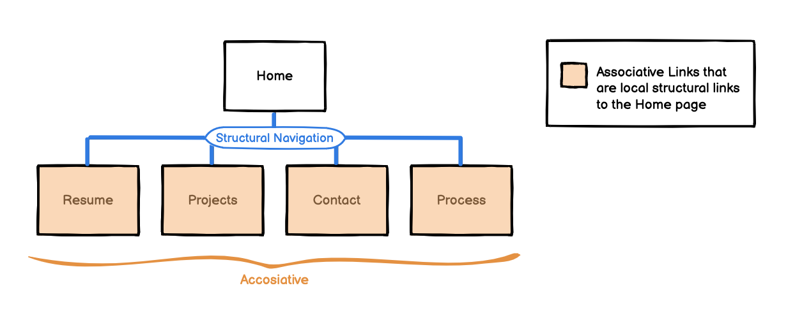

For the IA of my website I made the decision to have a simple navigation with no utility navigation because the nature of my website is a personal portfolio meant to show information: not an organization. A search didn’t seem appropriate to include either since there are only a few pages in my portfolio.
Initially my IA was only the levels: the fist level being the home page and the second level being the inner pages. However, I decided to break down the ‘Process’ page further into parts and put them in a tabular like navigation (separate tabs for each section of my process) This make navigating my process much more efficient and user friendly rather than just having to scroll down all the way to the bottom of an incredibly long page.
Original IAModified IA
The field of expertise that my portfolio is made for is software/web development (since I am a CS student who has experience in programming). Thus, for my personas, I chose 2 different types of personas: a hirer which is experiences in software development and a hirer who knows absolutely nothing. However, in both cases I chose employers (an intern manager and someone who quiches to build an application) because that is the main purpose that a portfolio is meant for: to advertise yourself to potential employers. Additionally, my website caters to both because it shows my skills and experience as an aspiring developer, but also provides a simple navigation and design.
Before building my wireframes, I made sure to assign the appropriate typology for each page. The home page gives clickable links in the form of a carousel and some cards, while the resume has a tabular form to display my skills and experience. The projects page is a media heavy page with embedded videos to display/demonstrate the fruits of the projects I have done. The Contacts page has a form with form validation. The Process page is content heavy in the form of images and paragraphs to display how I made hehe website. Thus, each page has its own distinct page typology. Additionally I also considered what dynamic elements I would include. I chose to include the carousel in the home page, because it displays all my inner pages in a dynamic fashion (the resume spotlight, project spotlight, and contact spotlight are all cycled automatically in the carousel). I chose to include tool tip for the icons in my footer so user will know what the icons mean (it is likely that someone inexperienced with software development many be unfamiliar with GitHub). Finally, I chose to include video elements in my projects page as simple little demos to show what those projects entail. I created the wireframes and IA using Balsamic Wireframes.
When building my website, I copied the provided code given by the Bootstrap Website and customized to the dark theme that I chose. I chose a dark theme, that is mainly black and dark blue in the background because I think it is an appropriate representation of software development (dark theme is my go-to when coding). Furthermore, the dark theme is much less harsh on the eyes as opposed to a light theme- Matt’s persona would benefit more from the dark them since it is less harsh to his sensitive eyes that are constantly looking at online portfolios and developing.
To maintain AODA standards, I made sure to make some adjustments to the default colours provided by bootstrap. Such as ‘text-muted’ which was below the AA accessibility standard against the black background. Overall, I made sure the text contrasted the background, and that all the images included the alt tag. Additionally, many of the parts are in section tags to indicate the different sections of the page, and many f the semantic HTML elements are included such as form, button and footer to account for the use for assistive technology and keyboard navigation.
For the main spotlight images, and hero images I created my own .svg files to fit the graphic theme of my design. Using photographs may be somewhat misleading to the field that this portfolio displays. Moreover, creating creative, and colourful graphic, but simple, images is represents me the best because I am familiar with graphic design and art and learning a lot in web development.